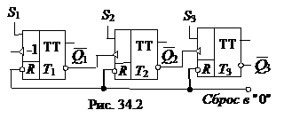

2. СЧЁТЧИК С НЕПОСРЕДСТВЕННЫМИ СВЯЗЯМИ
Условное изображение трехразрядного суммирующего счётчика показано на рис.
34.1, а, на котором символом R
обозначен вход общего сброса, символами Q1, Q2 и Q3 – выходы счетчика, CR – выход переноса единицы. Суммирующий вход
счётчика обозначается +1, вычитающий -1. Это счетные входы. У асинхронных счётчиков эти
входы помечены специальными символами: или  , указывающими полярность перепада входного сигнала: 1/0 или
0/1, при которой происходит переключение триггеров счётчика.
, указывающими полярность перепада входного сигнала: 1/0 или
0/1, при которой происходит переключение триггеров счётчика.
Для переключения триггеров в счётчиках используют следующие связи: непосредственную, тракт последовательного переноса, тракт параллельного переноса. Схема счётчика с непосредственными связями показана на рис. 34.1, б. Первый триггер счётчика Т1 образует младший разряд. Он пересчитывает входные импульсы по модулю 2, а состояние его выхода воспринимается следующим Т2 триггером как входные сигналы и снова пересчитываются на 2 и т. д.
Полное представление о состояниях счётчика (рис. 34.1, б), в зависимости от числа поданных на вход импульсов, даёт переключательная таблица (табл. 34.1) и временные диаграммы (рис. 34.1, в), где изображены последовательность входных импульсов (на входе +1), а также состояния триггеров – первого (Q1), второго (Q2) и третьего (Q3). Фронты импульсов на диаграммах показаны идеальными: потенциал, соответствующий логическому 0, считается равным нулю, переключающие перепады для наглядности помечены крестиками.
Рассмотрим воздействие на счётчик, к примеру, шестого (обозначенного на диаграмме цифрой 5) импульса. По его спаду триггер Т1 устанавливается в 0, перепад 1/0 на его выходе Q1 переключает в 1 триггер Т2, а триггер Т3 остается в прежнем (единичном) состоянии, так как перепад 0/1 на выходе Q2 не является для него переключающим.
Из диаграммы видно, что частота импульсов на выходе каждого триггера вдвое меньше частоты импульсов на его входе. В момент, предшествующий переключению очередного разряда, все предыдущие разряды счётчика находятся в состоянии 1. Восьмой импульс для трехразрядного счётчика (см. табл. 34.1) является импульсом переполнения: им все триггеры устанавливаются в 0 (счётчик "обнуляется").
Если в счётчике используются триггеры, переключающиеся перепадом 0/1, то вход последующего триггера нужно соединить с инверсным выходом предыдущего, на котором формируется этот перепад, когда по основному выходу триггер переключается из 1 в 0.
Схема вычитающего счётчика приведена на рис. 34.2, в которой по входам S в разряды счётчика заносят двоичное число, из которого нужно вычесть число, представляемое количеством входных импульсов. Пусть, например, в счётчик (рис. 34.2) занесено число 510 = 1012. Первым входным импульсом триггер Т1 переключится из 1 в 0 (по основному выходу); при этом на инверсном выходе возникает перепад 0/1, которым триггер Т2 переключиться не может; в счётчике останется число 1002 = 410.

Второй входной импульс устанавливает триггер Т1
в состояние 1, на выходе появляется перепад
1/0, который переключает Т2 в состояние 1, а формирующийся при
этом на перепад 1/0
переключает Т3 в состояние 0. В счётчике остается
число 0112 = 310. Аналогично можно рассмотреть действие
последующих входных импульсов.
.В счётчике с непосредственной связью переключение триггеров, вызванное срезом входного сигнала, происходит один за другим, последовательно, и задержка распространения п-разрядного счётчика, оцениваемая задержкой самого худшего случая – сменой всех 1 на все 0, - в п раз больше задержки одного Т-триггера. Если разрядов много, то большая задержка может оказаться серьёзным недостатком такого счётчика. Из-за невозможности выполнить смену состояния всего счётчика в единый момент времени, счётчики с непосредственной связью бывают только асинхронными, т. е. сигналом, переключающим их, является сам входной сигнал.